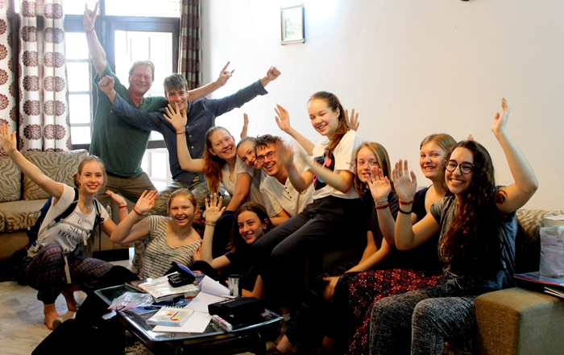
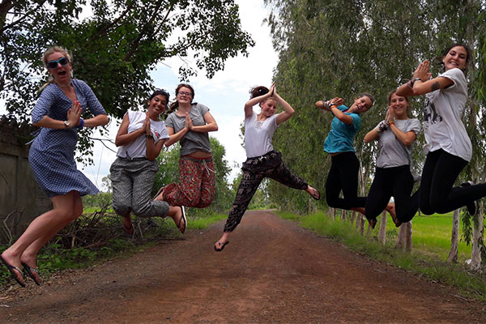
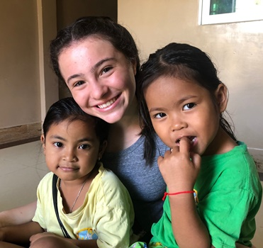
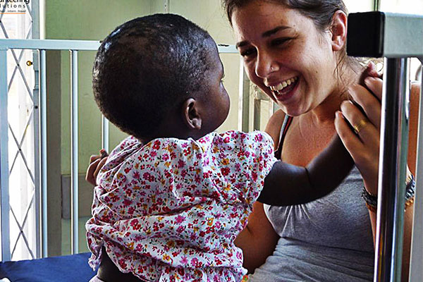
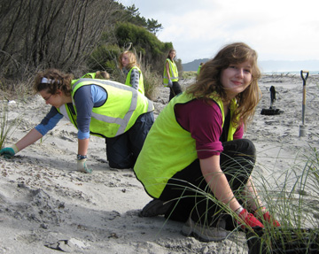
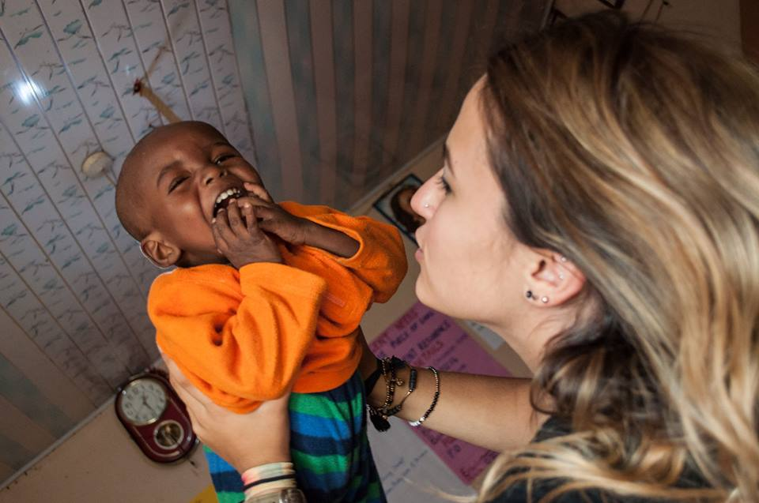

Australasia y el Pacífico
 Nueva Zelanda
Nueva Zelanda
Sudamerica
Europa

VOLUNTARIO EN EL EXTRANJERO
Medicina y atención sanitaria
Cuidado de niños
Proyectos docentes
Conservacion del Medio ambiente
Liderazgo de las mujeres
Desarrollo comunitario
Proyectos de 1 semana
Cuidado de animales y vida silvestre
Proyectos de construcción y edificación
Especiales de 2 semanas
Voluntariado a corto plazo

Programas de verano
Atención de necesidades especiales
Entrenador de deportes
Idioma - Semana de orientación
Voluntariado senior
Escuela secundaria y menores
Reserva de vuelo
Preguntas frecuentes
Recauda fondos para tu viaje
Ofertas de trabajo
Conozca a un voluntario
Costes del programa
Fechas del programa
Comprar seguro VS
Diplomado en voluntario internacional
Curso TEFL en línea
Preguntas Frecuentes
Ver todo
¿Por que deberias ser voluntario en el extranjero?
¿Puedo ser voluntario con un amigo o compañero?
¿Quien puede ser voluntario en el extranjero?
¿Cuando debo presentar la solicitud?
¿Ofrecen becas o ayuda financiera?
¿Por qué tengo que pagar la Volunteer Abroad?
Conocer al equipo
Mensaje a los padres
Noticias y articulos
Politicas VolSol
¿De que trata VolSol?
¿Por qué elegirnos?
¿Por qué pagar para ser voluntario en el extranjero?
Un arbol plantado
Últimas noticias/artÍculos
Ver todo
Los mejores programas de voluntariado en el extranjero para estudiantes universitarios en 2024-2025
Los 15 mejores programas de voluntariado de verano en el extranjero para 2024-2025
Los 10 principales países para el voluntariado a corto plazo en el extranjero en 2024-2025
5 formas asombrosas de marcar la diferencia siendo voluntario en 2024
Voluntariado en el extranjero con confianza
Oportunidades de voluntariado y pasantías para estudiantes de secundaria y universitarios, estudiantes de medicina y enfermería, viajeros en año sabático, así como mochileros y personas mayores.
Costos
Volunteering Solutions tiene una plétora de increíbles programas de voluntariado en el extranjero y oportunidades de pasantías para estudiantes de secundaria/universitarios, médicos yestudiantes de enfermería, viajeros de año sabático, así como mochileros y personas mayores que desean salir de su zona de confort y ser. parte de un viaje significativo.
Todos los programas están seleccionados de manera que tanto el que los da como el que los recibe se benefician por igual. ¡Hay algunos programas de vacaciones de verano especialmente diseñados, así como programas de voluntariado a corto plazo para aquellos que tienen poco tiempo! Establecida en 2007, la organización ha logrado ubicar a más de 15 mil voluntarios en el extranjero, quienes optaron por diferentes proyectos de voluntariado en todo el mundo.
Más acerca de nosotrosLos mejores programas de voluntariado en el extranjero para el verano de 2023
¿Busca viajar y ser voluntario en el extranjero en el verano de 2023? Elija entre nuestra amplia gama de opciones especiales de verano disponibles en diferentes destinos en todo el mundo.
Leer másProyectos de Conservación de Vida Silvestre y Cuidado de Animales
Elija entre una amplia gama de proyectos de conservación de vida silvestre y cuidado de animales ubicados en Asia, África, Australia y América Latina.
Leer másProjects
> Ver todos los proyectosMedicina y atención sanitaria
Programa para escuelas secundarios y menores de 18 años
Especiales de 2 semanas
Viajes benéficos
Cuidado de niños

Desarrollo comunitario

Proyectos de construcción y edificación
Conservación del Medio Ambiente
Año sabático en el extranjero
Pasante en el extranjero
Periodismo y Medios

Idioma - Semana de Orientación
¿Por qué elegirnos?
¡Será el viaje de tu vida! Embárcate en un viaje de voluntariado al extranjero con Soluciones de Voluntariado y experimenta la alegría de tocar vidas como nunca antes. ¡Sumérgete en las vibraciones de una nueva cultura, explora las gemas ocultas del país anfitrión, aprende nuevas habilidades, conoce a personas con ideas afines y marca la diferencia!
Experiencia
Tenemos más de 15 años de experiencia ofreciendo programas de pasantías y voluntariado internacional en todo el mundo.
Asequibilidad
Ofrecemos programas con precios bajos y flexibilidad. Nuestros programas están disponibles todo el año y atienden a personas de todas las edades.
Apoyo
A los participantes se les ofrece un apoyo inigualable mientras se encuentran en el lugar del programa y antes del viaje por parte de nuestro equipo en el Reino Unido y Asia.
Variedad
Elija entre una amplia variedad de programas de voluntariado, pasantías y viajes de voluntariado en más de 25 destinos de programas en todo el mundo.
Sostenibilidad
Nuestros voluntarios contribuyen a los Objetivos de Desarrollo Sostenible de Naciones Unidas. Todos nuestros programas de voluntariado trabajan para lograr uno o más ODS.
Confiable
Volunteering Solutions es un miembro de confianza de WYSE Travel Confederation y un proveedor aprobado de Year Out Group.